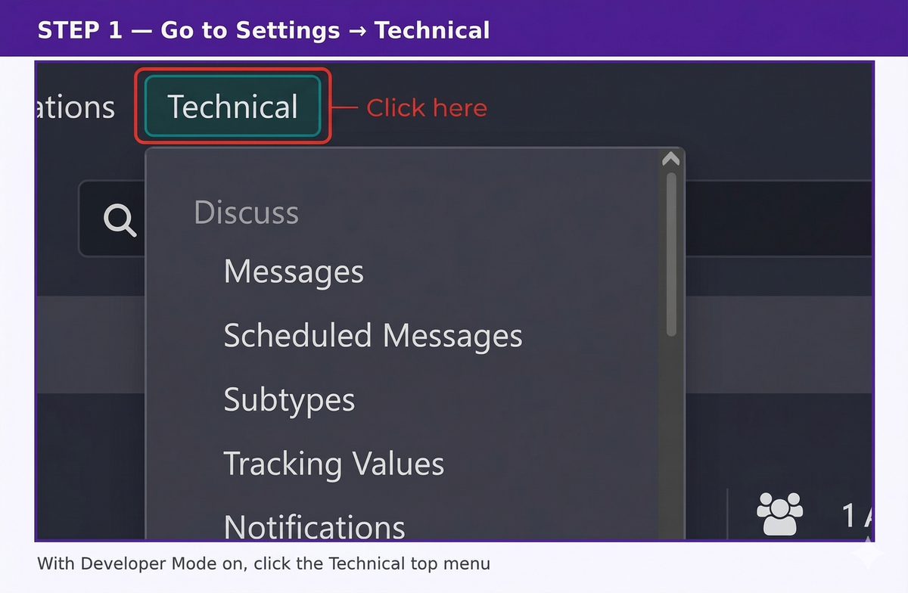
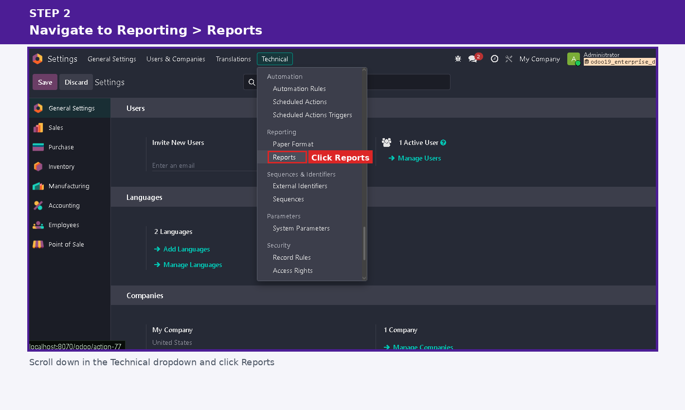
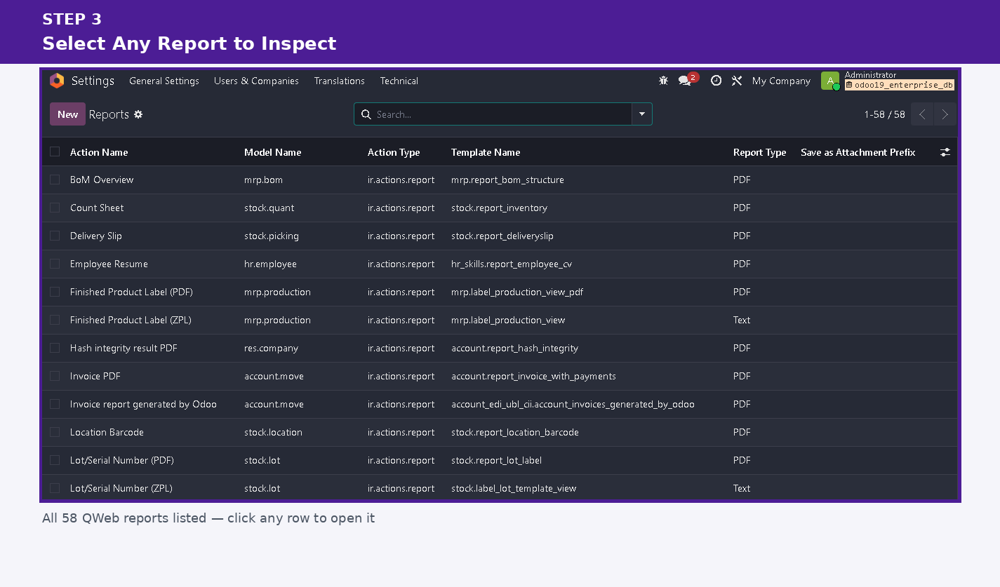
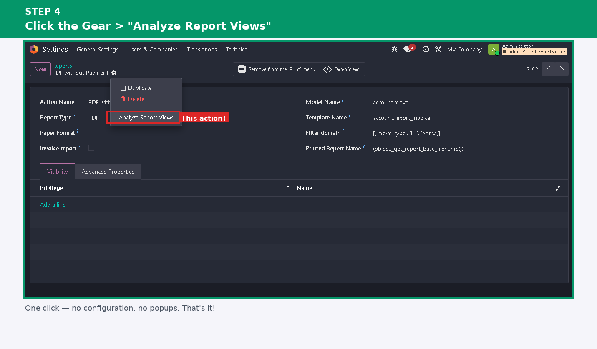
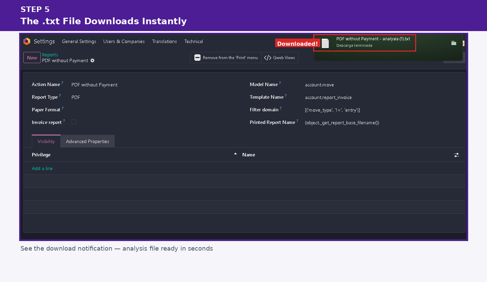
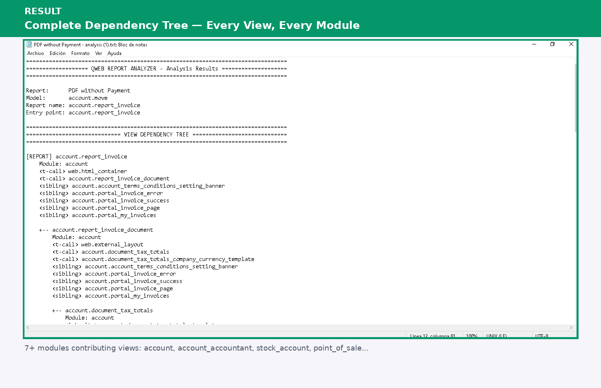

Instantly understand any Odoo report — base views, inherited views, t-calls, XPaths, and module origins. One click. No server. Free.
✅ Free & Open Source — No license key requiredYou have 8 modules installed and something is breaking your invoice PDF. You have no idea where to start.
A value appears in the printout but you can't find it in the main view. It could be inherited from anywhere.
Manually tracing t-calls and inherit_ids through the database. There has to be a better way.
Select any report → Action → Analyze Report Views → download a .txt file with the complete dependency map of every view involved.
| 📄 Sample output — delivery report with 1 custom override |
| ================================================================================ ========================= VIEW DEPENDENCY TREE ================================= ================================================================================ [REPORT] stock.report_delivery_document Module: stock +-- stock.report_delivery_document_content Module: stock <t-call> stock.report_delivery_document_line <t-call> web.external_layout +-- my_custom_module.report_delivery_override Module: my_custom_module <inherits> stock.report_delivery_document_content <xpath> //div[@class='page'] <-- HERE is your override ================================================================================ ================== INHERITED VIEWS (by module) ================================= ================================================================================ [my_custom_module] my_custom_module.report_delivery_override inherits: stock.report_delivery_document_content xpath: //div[@class='page'] |
🌳 Full Dependency Tree
Visual hierarchy from the report entry-point down through every t-call and inherited view, regardless of nesting depth.
🔗 T-Call Detection
Every template referenced via t-call is listed, including whether it exists in the database or is missing.
🛠️ XPath Expressions
See the exact XPath used by each inherited view so you know precisely where in the DOM the injection happens.
📦 Module Ownership
Instantly see which module (stock, sale, my_module…) owns each view — essential for debugging multi-module setups.
👥 Sibling Views
Discover related views sharing the same key prefix — often the source of unexpected content in your output.
⚡ Runs Locally — Always
No external server, no API key, no internet connection needed. The analysis engine is 100% inside your Odoo instance.
1
Enable Developer ModeSettings → Activate the developer mode
2
Open the Reports listSettings → Technical → Reporting → Reports
3
Select any reportInvoice, delivery slip, purchase order — any QWeb report
4
Action → Analyze Report ViewsA .txt file downloads automatically 🎉
Real walkthrough on Odoo 19 Enterprise — analyzing account.report_invoice,
one of the most inherited reports in Odoo (7+ modules touching it).
|
 |
|
 |
|
 |
|
 |
|
 |
|
 |
Tested on Odoo 19 — Community, Enterprise, and Odoo Online (including Odoo.sh and On-Premise).
Odoo 19 Community ✓ Enterprise ✓ Odoo Online ✓ Odoo.sh ✓Licensed under LGPL-3. Use it, fork it, contribute to it. The code is fully readable — no obfuscation, no black boxes.
Built by José Bertorelli — Odoo developer and consultant.
📧 josealebertorelli@gmail.com | 🐙 github.com/JoseAleBerto
Found a bug or have a feature request? Open an issue on GitHub — contributions are very welcome!
qweb report analyzer odoo qweb debug odoo report inheritance odoo view dependency odoo report debugger odoo xml views odoo t-call odoo xpath odoo report tree odoo qweb template odoo inherited views odoo report analysis odoo developer tools odoo 19 qweb odoo report structure odoo view inspector odoo online community enterprise odoo report xml odoo template debugger free odoo addon open source odoo tool analizador reportes odoo depurar reportes odoo vistas qweb odoo herramienta gratis analyseur rapport odoo outil gratuit odoo bericht analyzer odoo